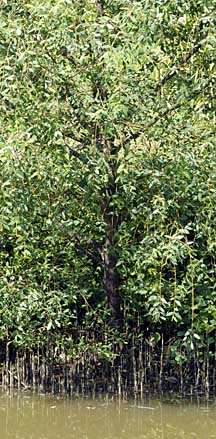
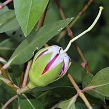
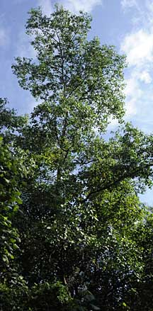
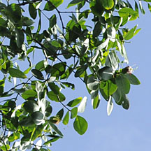
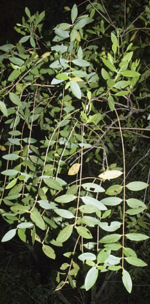
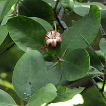
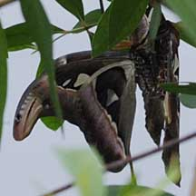

|
|
| plants text index | photo index |
| mangroves | Sonneratia in general |
| Berembang Sonneratia caseolaris Family Lythraceae updated Oct 2016 Where seen? This tree is now rare in the wild. In Singapore, there were only a few trees at Woodlands Town Garden and the upper reaches of Sungei Seletar. In the past, it was also found in tidal rivers in Balestier plain and Changi. The tree, however, has since been replanted in Sungei Buloh. The tree is usually found in tidal river-banks and creeks with mud banks and is considered the most inland of the Sonneratia species. Features: Tall tree 5-15m tall. The young branches hang down like those of the weeping willow (Salix babylonica) or angsana (Pterocarpus indicus). Bark slightly fissued, young stems and branches smooth waxy brown. Conical pneumatophores at first greenish grey with flaky bark that may grow to 1.5-2m tall at maturity. Many narrow roots may grow horizontally into the substrate at the base of the pneumatophore. Leaves nearly circular, oval or eye-shaped (5-13cm) narrow at the base, leathery, arranged opposite one another. The leaves have a 'tidy' appearance compared to those of Perepat (Sonneratia alba). Flowers large (10cm diameter) with petals narrow and dark red, and many long white stamens that are pink at the base, forming a powder-puff shape. Stiff cup-shaped calyx with sepals broadly triangular and yellowish greenish on the inside. The flowers open late in the evening and lasts for one night only. They smell of butter or sour milk. According to Giesen, the night-blooming flowers contain abundant nectar and are pollinated by bats and moths. At dawn, bees and nectar-feeding birds may visit. Fruit globular (7.5cm) leathery with calyx lobes flat, spreading out horizontally. Many bouyant seeds (1cm) embedded in fleshy pulp. According to the NParks Flora and Fauna website, Berembang is the preferred local food plant for caterpillars of the moths Indarbela quadrinotata, Lymantria lepcha, Suana concolor, Trabala irrorata, and Trabala vishnou. Fireflies are also associated with this tree (see page on Sonneratia in general). The Atlas moth (Attacus atlas) has been seen feeding on the tree. Human uses: According to Burkill, the young fruit is sour and used to flavour curries and chutnies. When ripe, the fruit have a "cheese-like taste" and is eaten raw or cooked. The pneumatophores are converted into corks for fishing net floats by shaping them and boiling them in water. The timber is not much used as the salt in it rusts iron nails and screws. Medicinal uses include various parts of the fruit for haemorrhage and coughs. According to Giesen, it makes poor timber but is occasionally used in salt-water piling. The pnematophores are used for making wooden soles of shoes. Status and threats: It is listed as 'Critically Endangered' on the Red List of threatened plants of Singapore. |
 Planted in the Park Pasir Ris Park, Apr 10  Red petals on unopened flower. Pasir Ris Park, Jan 10 |
 Calyx lobes flat, spreading out horizontally. Pasir Ris Park, Jan 10 |
 Calyx sepals greenish on the inside. Pasir Ris Park, Mar 11 |
 Petals red, stamens pinkish at the base. Woodland Park, Dec 09 |
|
 Wild tree. Woodland Park, Dec 09 |
 Woodland Park, Dec 09 |
 Young branches hang down like those of the weeping willow. Pasir Ris Park, Dec 12 |
 |
|
 Mating Atlas moths on the tree. |
 Atlas moth cocoon on the tree. Pasir Ris Park, Jan 10 |
 Sunbird nesting in Berembang. Pasir Ris Park, Jan 10 |
| Berembang on Singapore shores |
| Photos of Berembang for free download from wildsingapore flickr |
| Distribution in Singapore on this wildsingapore flickr map |
|
Links
References
|